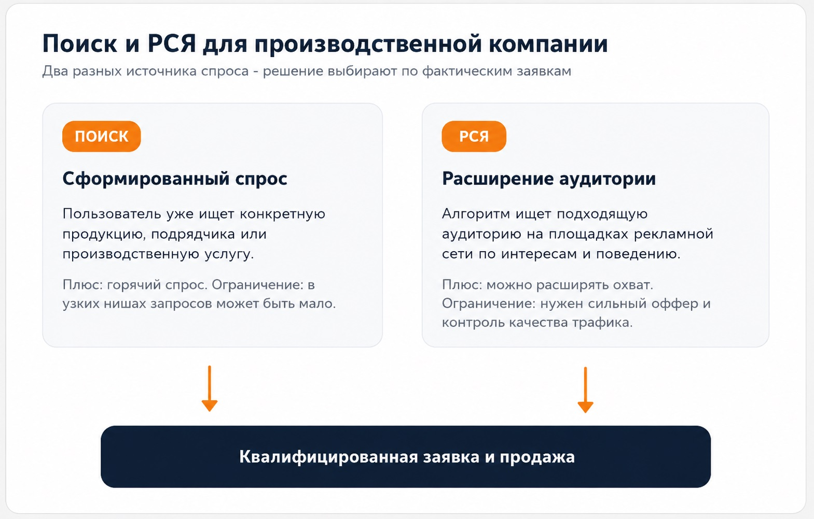
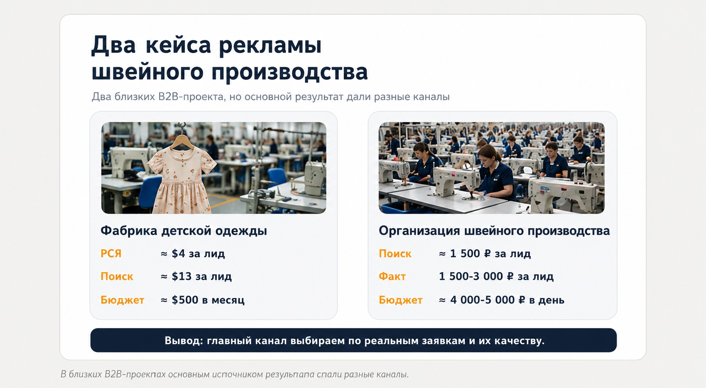

Блог о платном трафике
Яндекс Директ для производства: как получать целевые B2B-заявки
Яндекс Директ для производства может быть рабочим каналом привлечения заказчиков, если реклама настроена под реальную экономику предприятия, конкретные направления продукции и качество заявок.
В производственных нишах редко достаточно просто собрать ключевые слова и вести весь трафик на главную страницу сайта. Обычно приходится учитывать длинный цикл сделки, ограниченный поисковый спрос, несколько групп клиентов и техническую специфику продукта.

Чем реклама производства отличается от обычной рекламы услуг
У производственной компании часто есть несколько задач: загрузить мощности, найти оптовых покупателей, получить заказы на контрактное производство, вывести новое направление или привлечь заявки на конкретный вид продукции.
Один и тот же завод может работать с разными аудиториями: серийное производство, изготовление под заказ и готовая продукция оптом. Если смешать направления на одной странице и в одном сообщении, пользователю сложнее понять, подходит ли ему предложение.
- Запросов может быть немного, особенно в узкой промышленной тематике.
- Часть поискового трафика бывает информационной, розничной или связанной с вакансиями.
- Заказчик нередко сравнивает несколько подрядчиков и возвращается к выбору позже.
- Важнее квалифицированная заявка, расчет, договор и продажа, чем формальная отправка формы.
Поэтому продвижение производства - это система: спрос → рекламное сообщение → релевантная страница → заявка → квалификация → продажа.
Какие задачи можно решать через Яндекс Директ
Поиск заказчиков на производство
Подходит для металлообработки, пошива, изготовления деталей, упаковки, мебели, конструкций и другой продукции под заказ. Здесь пользователь уже ищет подрядчика и сравнивает условия.
Оптовые продажи
Реклама помогает привлекать дилеров, магазины, закупщиков и других B2B-клиентов. Оптовое направление лучше отделять от розничного, если у них разная экономика и разные посадочные страницы.
Загрузка отдельных производственных мощностей
Рекламу можно направлять на конкретную услугу или свободное направление: лазерную резку, порошковую окраску, контрактный пошив, фасовку или изготовление партии деталей.
Тест нового направления
До масштабного выхода на рынок можно проверить спрос, стоимость трафика и формулировки предложения, которые дают реальные обращения. Для предварительной оценки пригодится Прогноз бюджета Яндекс Директа.
Что лучше для производства: Поиск или РСЯ
Универсального ответа нет. В одних производственных проектах лучше работает Поиск, в других основной объем заявок дает Рекламная сеть Яндекса.

| Канал | Когда особенно полезен | Основное ограничение |
|---|---|---|
| Поиск | Есть прямой спрос на товар или производственную услугу | Объем запросов может быть небольшим, а конкуренция высокой |
| РСЯ | Нужно расширить охват и работать с аудиторией, которая еще не сформулировала точный запрос | Нужны сильный оффер, креативы и контроль качества трафика |
На Поиске человек уже формулирует задачу: «пошив одежды оптом», «изготовление деталей на заказ», «контрактное производство». Такие переходы часто ближе к заявке. РСЯ позволяет выйти за пределы небольшого прямого спроса. Подробнее о механике - в статье что такое РСЯ в Яндекс Директ.
Посадочная страница для рекламы производства
Одна из частых ошибок - вести весь рекламный трафик на главную страницу предприятия, где одновременно показаны история компании, десятки услуг, новости, сертификаты, вакансии и каталог.
Страница должна отвечать на конкретный запрос. Если у завода несколько направлений, их лучше разделять хотя бы на отдельные страницы или лендинги.
- Что именно производит компания или какую операцию выполняет.
- Для кого она работает: опт, B2B, контрактное производство, частные заказы.
- Партии, материалы и география работы.
- Примеры продукции, условия и понятный способ запросить расчет.
В кейсе фабрики детской одежды под разные предложения сделали отдельные лендинги. Это позволило не смешивать типы спроса и точнее управлять рекламой.
Семантика и автотаргетинг в производственной нише
Семантика строится вокруг прямых коммерческих запросов, типов продукции, материалов, технологий и характеристик. Более широкий спрос можно тестировать через автотаргетинг, РСЯ и аудитории, но важно регулярно смотреть реальные запросы и качество заявок.
Автоматические алгоритмы не отменяют ключевые фразы и минус-фразы. Для производства особенно полезно исключать вакансии, обучение, инструкции, самостоятельное изготовление, розничные запросы или ремонт, если компания этим не занимается. Подход к настройке разобран в статье как настроить рекламу в Яндекс Директ в 2026 году.
Аналитика: считать нужно не клики, а качество заявок
Длинный цикл сделки искажает картину, если смотреть только на конверсии сайта. Пользователь может оставить заявку сегодня, получить расчет через несколько дней, а договор заключить значительно позже.
Минимальный уровень аналитики - Яндекс Метрика с корректными целями на реальные обращения. Если есть CRM, стоит передавать статусы обращений и продаж. Яндекс поддерживает передачу офлайн-конверсий из CRM.
Оцениваю цепочку: переход → заявка → квалифицированный лид → расчет или КП → сделка. CTR и средняя цена клика нужны для диагностики, но решение о масштабировании принимается по стоимости и качеству обращений, продажам и экономике проекта.
Сколько нужно бюджета
Фиксированной суммы нет. Бюджет зависит от региона, спроса, конкуренции, стоимости перехода, конверсии страницы и допустимой цены клиента. При небольшом бюджете опасно дробить его на много кампаний и направлений: в узкой B2B-нише каждой стратегии может не хватить данных.
Два реальных кейса Яндекс Директа для производства

Фабрика детской одежды
Производство в Кыргызстане работало по пошиву детской одежды на заказ оптом и продаже готовой продукции. При бюджете около $500 в месяц основным результатом стала РСЯ - примерно $4 за лид. Поиск по пошиву одежды давал обращения примерно по $13, а продажа готовой продукции со склада - около $40 за заявку.
Посмотреть кейс фабрики детской одежды.
Организация швейного производства
Компания помогала брендам и предпринимателям запускать производство одежды. Здесь основной поток заявок давали поисковые кампании: около 1 500 рублей за лид при фактическом диапазоне 1 500-3 000 рублей. Бюджет составлял около 4 000-5 000 рублей в день.
Посмотреть кейс организации швейного производства.
Как я настраиваю Яндекс Директ для производственных компаний
Перед запуском я разбираю бизнес, а не только рекламный кабинет: какие направления выгоднее продвигать, кто принимает решение о покупке, какие заказы нужны производству и какую цену привлечения выдерживает экономика.
- Анализ спроса, конкурентов и прошлой рекламы.
- Проверка оффера, посадочных страниц, Метрики и целей.
- Подготовка структуры кампаний, семантики, автотаргетинга и объявлений.
- Запуск Поиска, РСЯ или смешанной структуры.
- Анализ запросов, площадок, стоимости и качества заявок.
- Масштабирование направлений с подтвержденной экономикой.
Когда Яндекс Директ может не дать нужного результата
Рекламный кабинет не исправит слабое предложение. Перед запуском стоит пересмотреть воронку, если предприятие не может обработать обращения, не определило продукт или направление, не понимает допустимую цену клиента, сайт не объясняет условия работы или прямой спрос полностью отсутствует.
Вывод
Яндекс Директ для производства работает лучше, когда реклама строится вокруг конкретного направления бизнеса, а результат измеряется дальше отправки формы. Поиск забирает сформированный спрос, РСЯ расширяет охват, отдельные посадочные страницы повышают релевантность, а CRM и офлайн-конверсии показывают реальное качество обращений.
В производственных проектах особенно опасны универсальные схемы. Два швейных кейса дали противоположный результат по каналам: в одном источником лидов стала РСЯ, в другом - Поиск. Структуру рекламы нужно выбирать по фактическим данным конкретного предприятия, а не по шаблону.